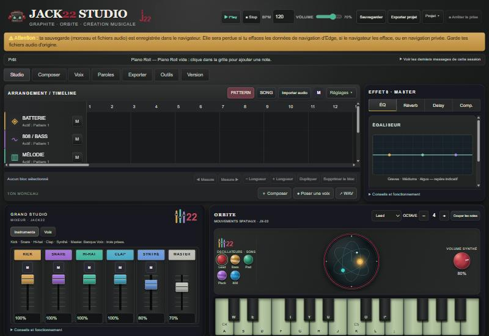
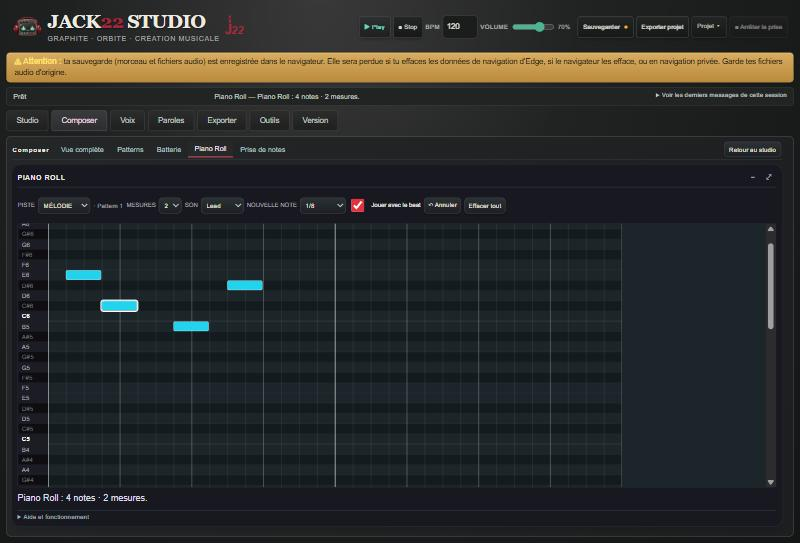
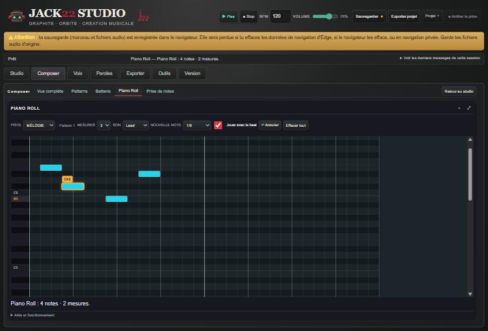
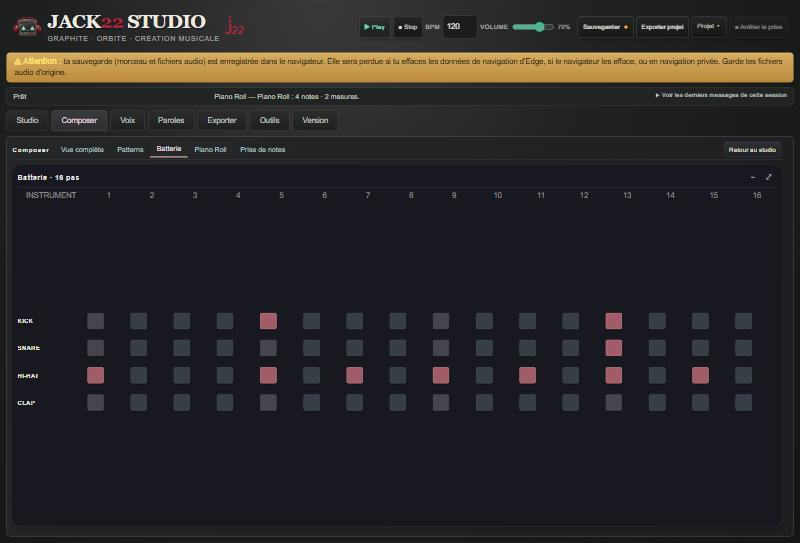
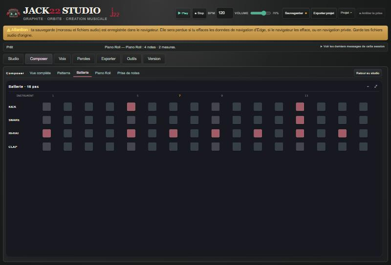
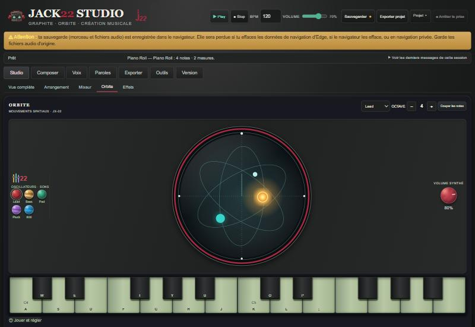
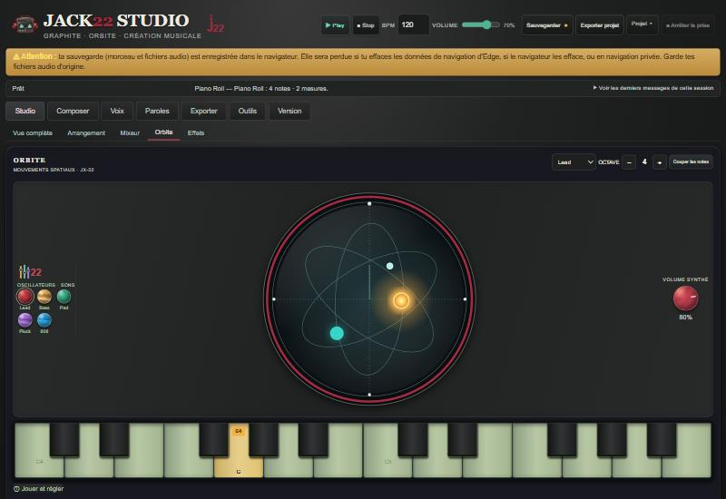

JACK22 STUDIO · 9.1 candidate — avant / après
Les captures ont été prises à la taille d'écran de Bob (1249 × 848 pixels de page, soit l'affichage Windows à 150 %), avec le même contenu de démonstration. À gauche, la 9.0 corrigée (ou la 8.9 validée pour l'accueil) ; à droite, la 9.1.
1. Accueil inchangé
Les deux captures sont identiques octet par octet. La comparaison de 408 éléments à six tailles d'écran ne relève aucun écart de position, de taille, de couleur, d'opacité ni de police. Le clavier de l'accueil garde ses repères C4 / C5 et ses lettres.


2. Composer · Piano Roll
Avant : les 72 lignes portaient chacune un nom de note (B6, A#6, A6…). Après :


- Seuls les « C » restent écrits, un repère discret par octave, avec un fin trait de séparation.
- La ligne sous la souris s'allume en ambre dans la colonne (« B5 » sur la capture).
- La note sélectionnée a un contour ambre et une étiquette avec son nom (« C#6 ») ; une note survolée affiche son nom discrètement.
- Les couleurs des notes, la grille et toutes les commandes sont inchangées.
3. Composer · Batterie
Avant : 16 numéros de pas, et les pistes flottaient au milieu du panneau, loin de la règle. Après :


- Seuls les débuts de temps (1, 5, 9, 13) sont numérotés.
- Le numéro du pas sous la souris s'affiche en ambre, et le pas est encadré.
- Les pistes sont collées à la règle (16 px au lieu d'un grand vide).
4. Studio · vue détaillée Orbite hors accueil
Cette vue s'ouvre par Projet → « Afficher les vues détaillées du Studio » → Orbite. Avant : la lettre du clavier d'ordinateur sur chaque touche. Après :


- Les lettres sont masquées ; les repères C4 et C5 restent, plus discrets.
- La touche survolée ou jouée affiche son nom (« G4 ») et sa lettre de clavier.
- Le clavier de l'accueil, lui, n'est pas touché.